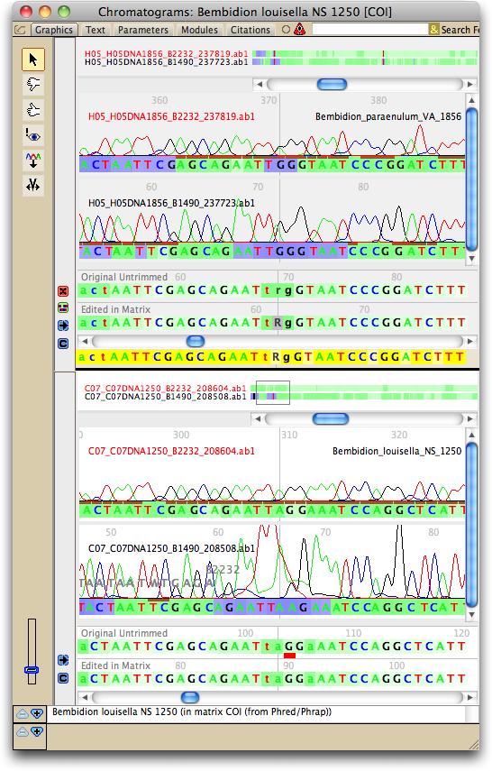

Show Extra Sequences can be used either to compare sequences from two different samples/taxa, or to assemble a contig by hand.
Assembling a contig by hand
Chromaseq is designed under the assumption that the different reads are automatically assembled by phrap into contigs, but occasionally the different reads may fail to be assembled and appear as two or more separate taxa in the matrix. This can happen if the overlapping sections of the reads are of poor quality, and so phrap cannot align them with sufficient certainty. Chromaseq does not have extensive features to permit you to reassemble these by hand, but Show Extra Sequences can help.
To attempt to assemble a contig by hand, show first the chromatogram viewer for the read or set of reads from one row in the matrix. Next, choose Chromatograms>Extra Sequences>Show Extra Sequence and select the taxon representing the other read or reads to be contig'd. You will see the chromatogram viewing window divided in two, with the initial sequence at the bottom and the second (grayed) at the top. You can slide them relative to one another using the scroll in the middle.
As you slide them you'll see a colored sequence near the scroll bar that turns yellow of the two sequences are in close alignment, red or green if almost in close alignment (red too far in one direction, green in the other). If you find a good alignment you can lock the scroll using Extra Sequences>Lock Extra Sequences. You can also request that Chromaseq attempt to align the two by touching on the alignment button at left (); the sequences are aligned and the scroll locked.
For the sequences to align successfully, you may need to change your view of one of the two sequences using the complement and/or reverse buttons.
Once you have compared and aligned the two reads or sets of reads, you may want to request that Chromaseq accept your alignment, and turn your handmade contig into a single row of the matrix with all reads so aligned. However, that is not yet possible. Instead, you will have to edit the two sequences separately, and later use copying and pasting in the matrix to construct the single sequence contig. Clever marking can facilitate this. For instance, we usually use the pink coloring (the !eye tool) to mark boundaries of the two sequences, that is the points at which they meet, so that later in the matrix editor it is easy to know what portions to copy and paste.
Comparing sequences of two contigs
To see another contig, with its chromatograms, within the same chromatogram viewer, choose Chromatograms>Extra Sequences>Show Extra Sequence, and you will be asked to choose one of the additional contigs to show. The extra sequence chromatograms will be placed above the chromatograms for the primary sequence:
